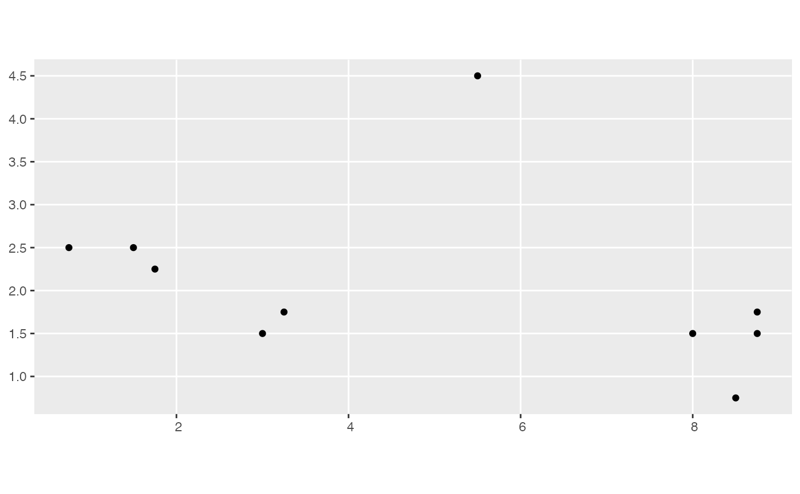
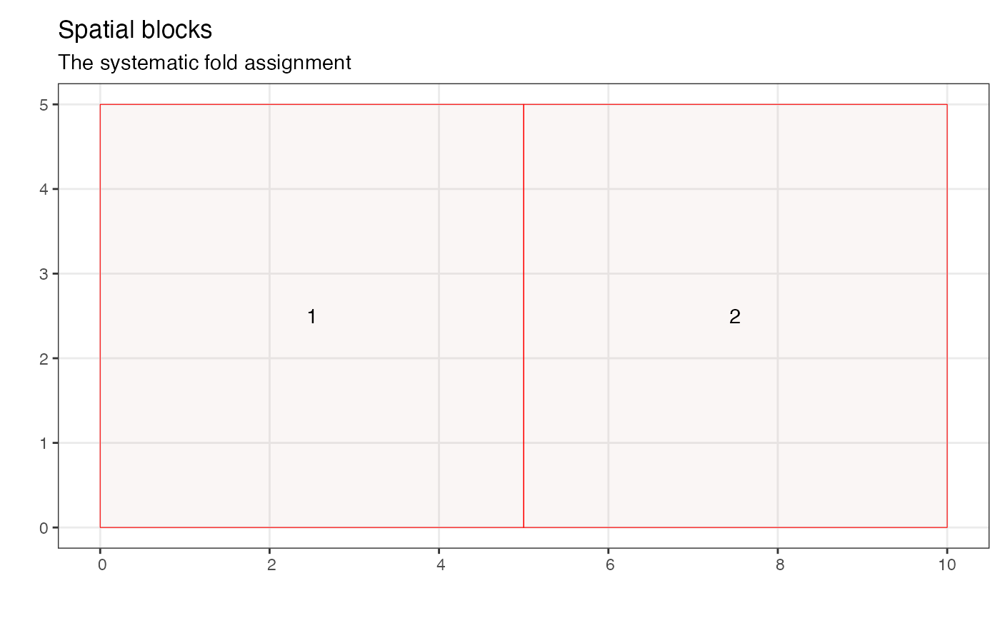

This is an example growth data frame formed from two census data frames. In this case it is made by combining census_1_ex and census_2_ex. The individuals alive in both censuses were linked by their tree ID.
growth_ex
A sf spatial tibble
Tree identification number. This identifies an individual tree and can be used to connect trees between the two censuses.
Species of the individual
Code for additional information on the stem during the first census: M means the main stem of the individual tree and R means the stem was lost, but the tag was moved to another stem greater than DBH cutoff, this stands for resprout.
Diameter at breast height of the tree in cm at the first census
Diameter at breast height of the tree in cm at the second census
Average annual growth between the two censuses in cm per year
Codes at the second census
Point location of the individual
Other example data objects:
blocks_ex,
census_1_ex,
census_2008_bw,
census_2014_bw,
census_2_ex,
comp_bayes_lm_ex,
focal_vs_comp_ex,
growth_spatial_ex,
growth_toy,
species_bw,
study_region_bw,
study_region_ex
library(ggplot2) library(dplyr) library(sf) library(sfheaders) library(blockCV) growth_ex %>% ggplot() + geom_sf()#> Simple feature collection with 2 features and 2 fields #> Geometry type: MULTIPOINT #> Dimension: XY #> Bounding box: xmin: 0.75 ymin: 0.75 xmax: 8.75 ymax: 4.5 #> CRS: NA #> # A tibble: 2 × 3 #> sp `mean(growth)` geometry #> <fct> <dbl> <MULTIPOINT> #> 1 american_beech NA ((1.5 2.5), (3 1.5), (5.5 4.5), (8.5 0.75), (8.… #> 2 sugar_maple 0.920 ((0.75 2.5), (1.75 2.25), (3.25 1.75), (8 1.5),…# Add buffer growth_spatial_ex <- growth_ex %>% add_buffer_variable(direction = "in", size = 1, region = study_region_ex) # Add cross-validation folds fold1 <- rbind(c(0, 0), c(5, 0), c(5, 5), c(0, 5), c(0, 0)) fold2 <- rbind(c(5, 0), c(10, 0), c(10, 5), c(5, 5), c(5, 0)) blocks <- bind_rows( sf_polygon(fold1), sf_polygon(fold2) ) %>% mutate(foldID = c(1, 2)) SpatialBlock_ex <- spatialBlock( speciesData = growth_ex, verbose = FALSE, k = 2, selection = "systematic", blocks = blocks )